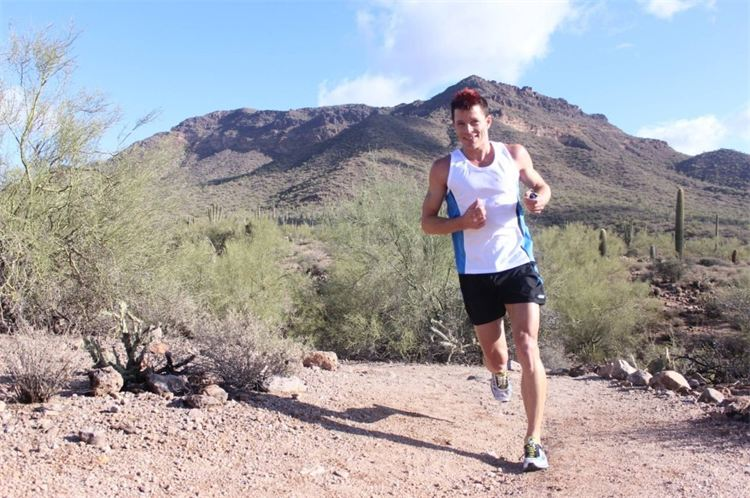

Prestation/Triathlon inriktad coaching
Känner du att du vill ha hjälp med periodisering och upplägget av din träning? kanske har du ett speciellt mål du vill uppnå så som Långdistans eller kortdistans inom Triathlon, eller bara vill förbättras inom sporten? Som f.d. elittriathlet kan Luke hjälpa dig att långsiktigt bilda en bas för att förebygga skador och uppnå en förbättring inom sporten. Vi analyserar och följer dig och din träning ut efter ditt behov för att nå så bra resultat som möjligt!Vårt baspaket innehåller Träff för Analys och Kapacitet för att se vad du har för mål och förutsättningar, veckovis utskick av träningsprogram samt uppföljning varje vecka. Vid lämpliga tillfällen anordnas träffar för att utöka kunskap och prestation. Är du intresserad av ytterligare kunskap inom styrka, kondition och plusträning kan detta bokas separat.
Priser
Triathlon coaching - 1000 kr / mån.
Extra Instruktionstillfälle -. 399 kr
Kontakta gärna oss om du är intresserad eller vill veta mer!
